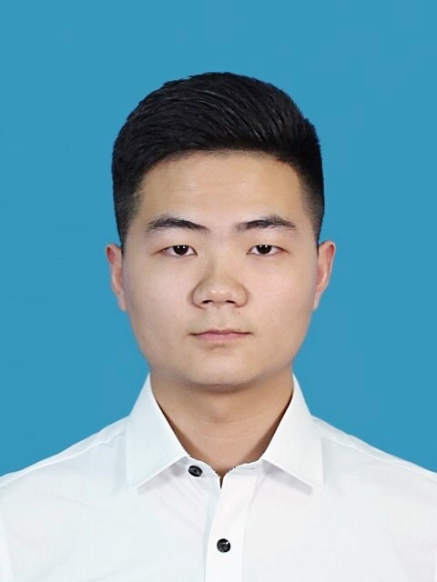

Haoran Bai
Thanks for your attention. I am a Ph.D. candidate in School of Computer Science and Engineering, Nanjing University of Science and Technology, China. I am a member of Intelligent Media Analysis Group (IMAG) and advised by Prof. Jinshan Pan. Not long ago, I was an intern at Tencent AI Lab, working closely with Di Kang and Linchao Bao.

My research interest includes image/video super-resolution restoration and enhancement, deblurring, dehazing and other restoration tasks. Recently, I am experimenting with face editing, 3D face reconstruction, and related tasks.
You can contact me by E-mail: baihaoran[at]njust[dot]edu[dot]cn, hrbai[dot]cs[at]outlook[dot]com.
You can find my publications and projects from my [Google Scholar] and [Github].
Latest News:
- Oct. 2023: A paper received a Minor Revision on IEEE TPAMI.

- May. 2023: I receive the CVPR 2023 Outstanding Reviewer Award.
- Mar. 2023: Achieve 1st place on SSIM and 2nd place on PSNR in Track 3 of NTIRE 2023 SSR Challenge.
- Mar. 2023: Achieve 4th place on x2 and 2nd place on x3 in NTIRE 2023 Real-Time SR Challenge.
- Mar. 2023: I am invited to be a reviewer for ICCV 2023.
- Feb. 2023: One paper is accepted by CVPR 2023 [Paper].
- Jan. 2023: One paper is accepted by IEEE TPAMI [Paper].
- Dec. 2022: A large-scale facial UV-texture dataset FFHQ-UV is released [Github].
- Nov. 2022: I am invited to be a reviewer for CVPR 2023.
- Oct. 2022: First-Class Scholarship of Nanjing University of Science and Technology.
- Jul. 2022: I am selected for the Excellent Ph.D. Students Sponsorship Program by NJUST.
- Jun. 2022: I receive the CVPR 2022 Outstanding Reviewer Award.
- May. 2022: I work as an intern at Tencent AI Lab.
- Mar. 2022: I am invited to be a reviewer for ECCV 2022.
- Jan. 2022: One paper is uploaded to arXiv [Paper].
- Dec. 2021: One paper is accepted by IEEE TIP [Paper].
- Dec. 2021: I am invited to be a reviewer for IEEE TPAMI.
- Nov. 2021: I am invited to be a reviewer for CVPR 2022.
- Oct. 2021: First-Class Scholarship of Nanjing University of Science and Technology.
- Jul. 2021: One paper is accepted by ICCV 2021 [Paper].
- Apr. 2021: One paper is accepted by CVPRW 2021 [Paper].
- Apr. 2021: Top-3 on the low-resolution track of the NTIRE 2021 Image Deblurring Challenge.
- Sep. 2020: First-Class Scholarship of Nanjing University of Science and Technology.
- Feb. 2020: One paper is accepted by CVPR 2020 [Paper].
- Sep. 2019: First-Class Scholarship of Nanjing University of Science and Technology.
- Sep. 2018: First-Class Scholarship of Nanjing University of Science and Technology.
Publications:
Self-Supervised Deep Blind Video Super-Resolution Haoran Bai and Jinshan Pan Submmited to IEEE Transactions on Pattern Analysis and Machine Intelligence (TPAMI), Minor Revision [Paper] [Code]
FFHQ-UV: Normalized Facial UV-Texture Dataset for 3D Face Reconstruction Haoran Bai, Di Kang, Haoxian Zhang, Jinshan Pan, and Linchao Bao IEEE Conference on Computer Vision and Pattern Recognition (CVPR), 2023 [Paper] [Dataset and Code]
Cascaded Deep Video Deblurring Using Temporal Sharpness Prior and Non-local Spatial-Temporal Similarity Jinshan Pan, Boming Xu, Haoran Bai, Jinhui Tang, and Ming-Hsuan Yang IEEE Transactions on Pattern Analysis and Machine Intelligence (TPAMI), 2023 [Paper] [Code]
Self-Guided Image Dehazing Using Progressive Feature Fusion Haoran Bai, Jinshan Pan, Xinguang Xiang, and Jinhui Tang IEEE Transactions on Image Processing (TIP), 2022 [Paper] [Code]
Deep Blind Video Super-resolution Jinshan Pan, Haoran Bai, Jiangxin Dong, Jiawei Zhang, and Jinhui Tang IEEE International Conference on Computer Vision (ICCV), 2021 [Paper] [Code]